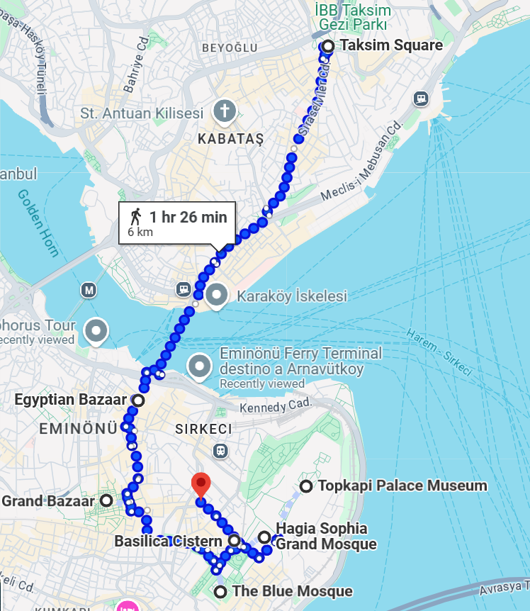
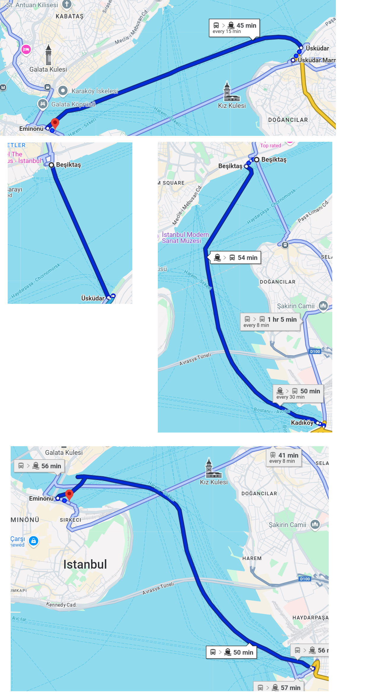
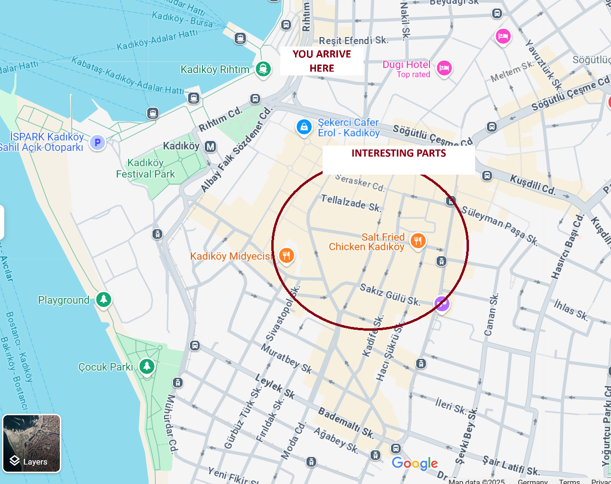
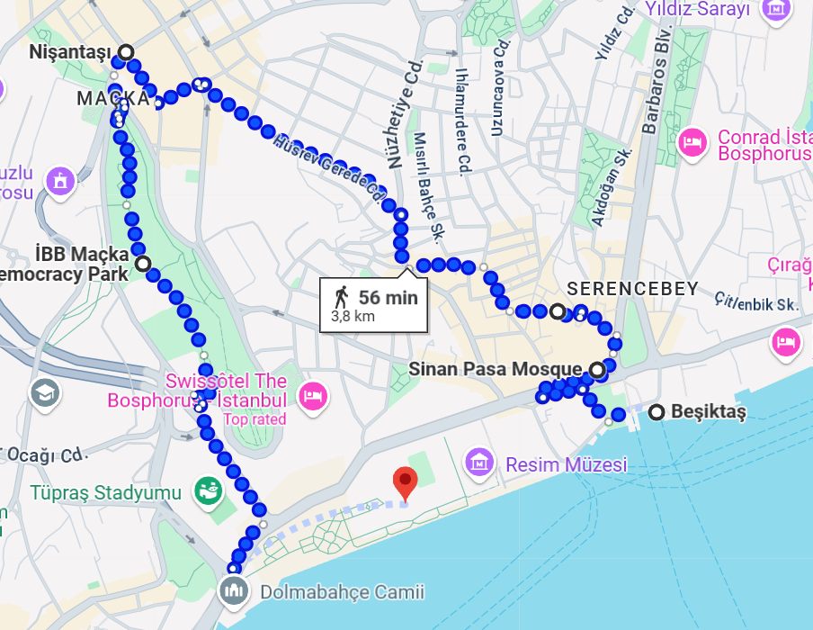

Kerem's Guide
First of all you need to know a couple of names to have a sense of direction.
Key Areas
-
Eminonu:
The historical island where the Topkapi Palace is
-
Taksim:
Most touristic square, it has Istiklal street that has Galata tower.
-
Besiktas:
Not so touristic, more hipster and cool part
-
Nisantasi:
Rich neighborhood, high-end shops, small and big
-
Kadikoy:
Authentic Istanbul – For me the real istanbul experience is here, Full of restaurants, shops,bars and young people
Check here
-
Uskudar:
Conservative but great ferry views
Avoid:
Shopkeepers inviting you inside, taxi drivers, bars, people asking for money. I wouldnt go side streets as a tourist just to be sure after 8pm. In touristic zones 24/7 should be okay.
Kerem's Historic Walking Route
If 6km feels too much, you can always take tram/metro to make shortcuts or make this trip in 2 days.
But almost everywhere you will see something different and interesting

-
Taksim Square - walk through Istiklal caddesi, at the end of the street there is a tram, you can use it to clim back but for going down i suggest you walk the street full of interesting things. Try to enter any building you see interesting, there are like very old cinemas, historic hotels, old book shops etc. Dont eat or drink here, and
try to ignore the annoying tourists and shopkeepers.
- Galata Bridge - there are fish shops here, its nice to walk
- Misir Carsisi (Spice Bazaar) - a historical bazaar, famous of spices
- Grand Bazaar (Kapali Carsi) - again a historical bazaar full of textiles etc. Its nice to see but i wouldnt give too much attention to shopkeepers
- The Blue Mosque - Beautiful mosque
- Basilica Cistern - An underwater storage from Roman empire. looks quite cool with a Medusa head
- Hagia Sophia - In front of the Hagia Sophia, you will see two towers. This is where the old Roman horse track was.
- Topkapi Palace
Route Map
Kerem's Ferry Tour (Budget-Friendly)
As you can see from the below image you can travel between ALL the nice parts using ferries

- Eminonu → Uskudar - A very nice line to see the Princess tower.
- Uskudar → Besiktas - Besiktas is full of nice cute cafes, and you can walk from here to Nisantasi- which is the fanciest neighborhood, full of rich restaurants and shoppings and not tourist targeting shops.
- Besiktas → Kadikoy - Kadikoy is the hipster part of the city with retro clothing shops, second hand bookstores, gourmet coffee and stuff. It has good palaces to eat, good places to drink Raki and you can eat fish+bread or fried calamari+bread on the street or in a restaurant.
You can basically go to all above 3 places just with ferries, and enjoy a cup of tea and bakery food while watching the sea, birds and the view of istanbul. One ride cost like 90 cents i believe.
Kerem's Kadikoy

Actually for Kadikoy best is to just walk in random streets and explore and enjoy a coffee or tea here and there and deserts. If you wanna see a huge sealine full of people drinking beer and relaxing, you can walk to Moda from here. I just marked the center in the image but you can walk from there to the left side of the map to reach the
shore and explore. For me this is the best "real" Istanbul experience.
Kerem's Besiktas + Nisantasi hill walk

If you dont like hills you can go to Osmanbey metro station and just follow the route from there. Make sure you pass through the mosque on the corner named Sinan Pasa Mosque, its from 1555 and its crazy how silent it is in there comapred to hectic outside
Walking Map
Other Suggestions
-
Balat:
very cool place to see for couple of hours, quite hipster full with old colorful houses. But i wouldnt walk there and its not exactly easy to reach there. if you have time definitely worth it though. I would use the tram(T5) to go there.
-
Rumeli Hisarı:
Its a baeutiful castle where you can watch the sea and ships passing by, but its probably a bit far to where you stay
Here is how to travel
-
Cagaloglu Hamami:
If you wanna experience a Turkish Bath, they say this is a good place. I never tried it though
-
I would definitely check this website for more hidden stuff
Food Recommendations
-
Best doner in my opinion (besiktas):
Karadeniz Döner Asım Usta
-
Kebab (Kadikoy):
Çiya Sofrası
-
Best soup in kadikoy:
Ayık Çorba Kebap
-
Desserts (Near Topkapi):
Hafız Mustafa - They say this is good for deserts
Public Transport
I would travel everywhere with public transport and never use taxis. Istanbul is very well connected. Not sure how it works for tourists but im pretty sure you can just buy an "Istanbulkart" when you arrive and fill it up with 10-20 euros. Whenever you use the card it always shows whats left in it. A single ride from what i checked costs 30
lira, which is like 0.7 cents so you can figure out depending on how much you wanna use it. I would use Metro and Ferries to go everywhere, metro stations are almost always walking distance. Buses can be complicated to understand. Ferries are also very simple to understand. You can buy this card anywhere, you will see the sign everywhere
but here is the link for more info:
Istanbulkart Info
Museum Pass (Optional)
If you are going to visit many museums this might make sense. I would compare prices depending on my plan.
Check prices here
How to Travel to Sakarya
I suggest to take the bus. They are pretty luxurious, well equipped and fast. And there is almost always enough space but you can prebuy your tickets online.
- By Bus: Go to Esenler,Harem or Alibeykoy bus terminals. Vib turizm or Kamil Koç buses run hourly. Trip takes ~2 hours. Leave in Adapazari (Center).
- By Train: From Söğütlüçeşme or Pendik stations, take the high-speed train to Arifiye station (Sakarya). Make sure you book your tickets beforehand.